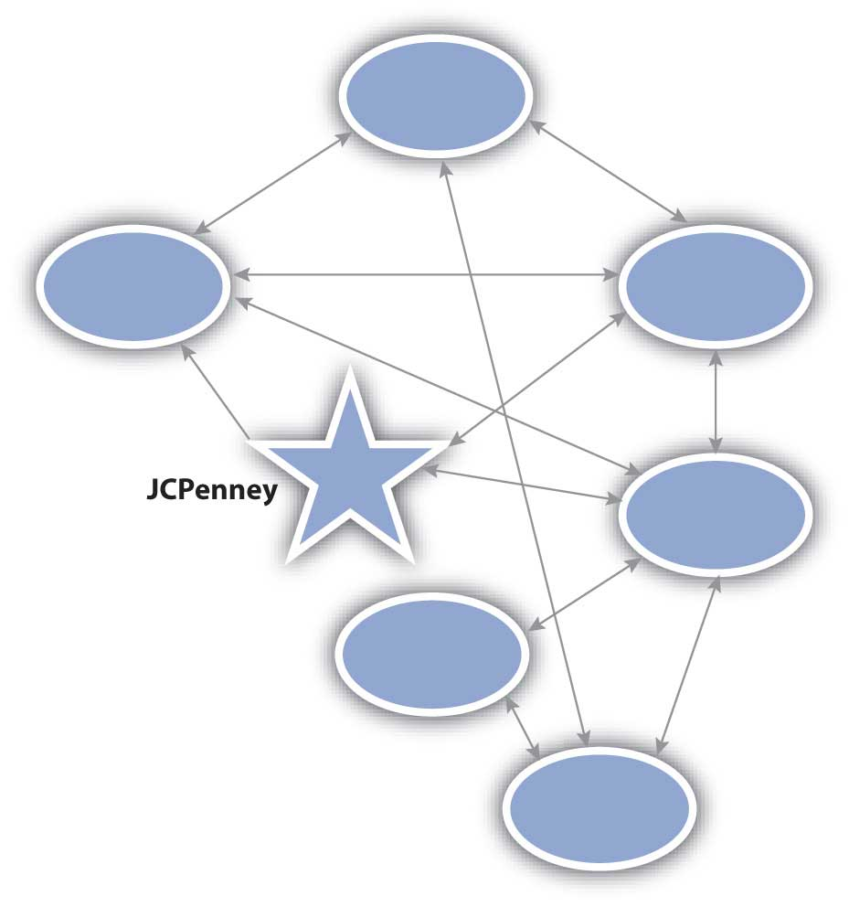

If you are about to buy a new high-definition television, where do you go to learn about which one is best? Like many buyers, you probably turn to the Internet and visit sites such as Epinions.com or ConsumerSearch.com. Do you want to learn about the products of a specific retailer? More than 4,700 JCPenney products have been reviewed on Epinions.
The point is that consumers talk. They talk to each other, and they post their thoughts and opinions online. Word of mouthThe passing of information and opinions verbally., or the passing of information and opinions verbally, has a powerful influence on purchasing decisions. You rely on word of mouth when you register for classes. For example, you ask other students about which professors are best and how hard their classes are. If you have no one to ask, you can look at online sites such as ratemyprofessors.com.
BuzzWord of mouth that includes blogs, articles, and other forms of promotion. refers to the amount of word of mouth going on in a market. However, in addition to traditional word of mouth, buzz includes blogs, articles, and other information about an offering.
Companies try to create buzz about their products by sending press releases, holding events, offering free samples, writing blogs, or releasing podcasts. Some marketing managers actually spend time “trolling” the Web looking for postings about their products. If a negative posting appears to be a legitimate complaint, then the marketing manager can take action to fix the customer’s problem, and future complaints of the same nature can be avoided.
Some companies consider customer service to be a marketing channel, to the point that they train their customer service representatives to identify sales opportunities and pitch products. Dell, AOL, and others have been soundly criticized for taking this approach because customers felt that all they got was a sales pitch instead of a solution to their problem. Other companies consider customer service to be a marketing channel only to the extent that it generates positive word of mouth—do a great job with tough customers and encourage a positive review on a Web site. This latter perspective recognizes that when customers want service they don’t want to be sold, but it also recognizes that empowered customers can help market a product.
A marketing strategy being used increasingly often is influencer marketingTargeting individuals known to influence others so they will use their influence in the marketer’s favor., or targeting people known to influence others so that they will use their influence in the marketer’s favor. These influencers are the lead users we discussed in the chapter on designing offerings. If you spend some time on Procter & Gamble’s (P&G) Crest toothpaste Web site, you might be given a chance to complete a survey. (Someone who is very interested in dental care is more likely to take the survey.) The survey asks if you talk about dental care products, if you research such products, and if you influence others. These questions and questions like them are used to identify influencers. P&G then provides influencers with product samples and opportunities to participate in market research. The idea is that new offerings should be cocreated with influencers because they are more likely to be both lead users, early adopters of new offerings, and influence other people’s decisions to buy them.
That was the idea behind JCPenney’s Ambrielle lingerie community. Carros and other JCPenney employees on the Ambrielle marketing team devised a strategy of identifying women who would be willing to join a special community. A communityA form of a social group that centers its attention around a particular brand or product category., in the marketing sense, is a social group that centers its attention on a particular brand or product category. Another term for a community is a social networkA community or social group that centers its attention on a particular brand or product category.. The social network for Ambrielle lingerie is illustrated in Figure 14.1 "A Social Network".
Figure 14.1 A Social Network
Each circle represents a person in the social network, and the arrows represent the ties between them. You can see that some are JCPenney customers as represented by the arrows between the company (the star) and the individuals. Others are not, but are in contact with JCPenney customers.
Some communities are organized by companies. For example, Nike Plus is a community built around a sensor that tracks how far you run. The sensor can be inserted into Nike running shoes or clipped to competitors’ shoes, but the community was formed on the Nike Plus Web site. Here runners could use the input from the sensor to compete against each other, track their own performance and progress, and share experiences with each other. But many communities spring up naturally, without any help from a marketer. A local arts community is an example. In the case of Ambrielle, JCPenney created and manages the group; in the case of the Nike Plus, Nike manages the group in conjunction with its members.
Another difference between the Ambrielle community and Nike Plus is that the Ambrielle community is only composed of influencers. By asking a series of questions, JCPenney could identify which women were influencers and invite them to join. By contrast, anyone who owns a Nike Plus sensor can be a member of Nike Plus. Ambrielle influencers provide feedback about products to JCPenney and take an active role in designing the company’s offerings. In other words, the influencers participate regularly in marketing research activities. Another term for this type of community is an influencer panelA special type of community that participates regularly in marketing research activities..
Table 14.1 "Characteristics Used to Qualify the Members of Influencer Panels" lists the different characteristics used to qualify members of an influencer panel. Because JCPenney has also gathered lifestyle, demographic, and psychographic information about them, the firm has a fairly complete picture of each member. This information is invaluable because JCPenney can use the knowledge to segment the group more precisely. Thus, when the company test markets communications or offerings with the group, it can gain a better understanding of how well those efforts will work with different groups of consumers.
Table 14.1 Characteristics Used to Qualify the Members of Influencer Panels
| Characteristic | Definition |
|---|---|
| Active Influencer | Willing to tell others, but more important, others listen and act on the influencer’s opinion. |
| Interested | Has a greater intrinsic interest in the product category than the average user. |
| Heavy User | Actually uses or consumes the offering regularly, preferably more than the average user. |
| Loyal | Sticks to one brand when it works. Note, however, that this category could include someone who isn’t loyal because the right offering meeting his or her needs hasn’t yet been created. |
| Lead User | Willing to try new products and offer feedback. In some instances, it’s possible to modify an offering to suit an individual consumer; when it is, you want lead users to suggest the modifications so you can see how and why they do so. |
An influencer panel does not necessarily become a community. If the communication that occurs is only between the marketer and the individual members of the panel, no community forms. The members must communicate with one another for a community to exist. For example, a company may look for bloggers who regularly blog on subjects of importance to the company’s market. Procter & Gamble looks for bloggers who write on subjects of importance to moms. P&G then offers these bloggers samples of new Pampers products before these products reach the market, research reports on Pampers, and other things that might find a way into blogs. The goal is to influence the bloggers who already influence women. This strategy, though, does not require that P&G create a community through a Web site or other activity (although P&G does create influencer panels through other techniques).
As a marketing professional, how do you find influencers? The answer is that they have to be actively recruited. As you learned earlier in the chapter, P&G surveys people looking at its Web sites. If you answer the survey questions in a way that shows you meet the criteria listed in Table 14.1 "Characteristics Used to Qualify the Members of Influencer Panels", you might be asked to join a P&G panel. Another method is to ask a customer whose complaint you have just resolved to take a survey. After all, someone who has taken the time to complain might also be motivated to participate on a panel. Still another recruiting method is to send random surveys to households to identify people who would be good panel participants.
Once you create an influencer panel, you have to activate it. After all, influencers do not want to be singled out only to be ignored. However, marketing professionals should be able to answer the following three questions before they activate a panel:
As we have indicated, communities spring up naturally. Online, social networking siteA communication medium for communities, or social networks. like Facebook and LinkedIn are used to create communities. Everyone you are friends with on sites such as these are people that you already knew. The sites are simply the communication medium. What is interesting is that Facebook and other social networking sites can’t tell the difference between close friends and acquaintances. From a marketing perspective, since each tie or relationship is treated the same, social networking sites provide interesting ways to reach people. One, perhaps not so interesting way, is as a broadcast medium for advertising. A company targets consumers by placing ads on a person’s site based on what Facebook or LinkedIn knows about the person—just as ads are placed on a radio or television station and matched to certain audiences.
The more interesting way is by consumers sending other consumers links and other information. For example, when a marketer creates a Facebook page for an offering such as a movie, a community can form around the movie. Then if you join the group that loves the movie, Facebook notifies all of your friends that you are promoting the movie. A community such as this might not be as enduring as the Ambrielle or Nike Plus groups, but it serves its purpose—at least until the movie is old news and newer movies come out and get attention. When you become a “fan” of something like a movie, you are part of the buzz.
Marketers are looking at many ways to use Facebook and other social networking sites to create buzz. Facebook has a “gift-giving” application that allows people to give “gifts” to each other. The gifts are really just icons (pictures) within Facebook. Enter GiveReal, an online service that allows people to give one another real gifts online. GiveReal developed a promotion with Bombay Sapphire, a leading premium gin, and Facebook. The promotion allows Facebook users to give their friends electronic coupons (downloadable to a credit card) for mixed drinks that use Bombay Sapphire. These coupons can then be redeemed at restaurants and bars that accept credit cards.Anonymous, “Give Real; Leading Online Gifting Service GiveReal.com Partners with Bombay Sapphire to Serve Up the Perfect Summer Cocktail through the Web,” Marketing Weekly News, July 4, 2009, 225.
One result of social networking is viral marketingThe spread of the company’s message (like a virus) through a community., or the spread of the company’s message (like a computer virus) through the community. Some companies have enhanced the viral marketing of their offerings with interactive Web sites that might feature, say, a game built around an offering. Consumers then e-mail their friends with links to the game or Web site. Examples include the viral campaign by Nine Inch Nails for its concept album, Year Zero. An online alternate reality game was created involving characters and situations drawn from the music on the album. The album and game were so popular that HBO has even considered creating a series around the dark, futuristic tale told on the album.
Blogs are one form of online communication that helps spread viral marketing messages. As we noted earlier, companies can try to influence bloggers to blog on their products or company. Other companies blog directly, perhaps having a blog written by corporate marketing officers who “spin” the information. But blogs can be written by anyone. Blogs can serve as a “voice” for a community. For example, the chief executive of the National Thoroughbred Horseracing Association (the NASCAR of horseracing) writes a blog for the organization that is posted on its Web site. However, anyone can leave a comment on the blog. Blogs have become much more like dialogue in a town hall meeting than a one-way marketing message.
Figure 14.2
Ashton Kutcher was the first person to have over a million followers on Twitter.
Source: Wikimedia Commons.
Twitter is another application that facilitates viral marketing by enabling people to “follow” someone. When an organization or a person posts something on Twitter, the post—called a “tweet”—is sent as a text message to all followers of that organization or person. Ashton Kutcher made headlines by being the first person to collect a million followers. However, the first company to generate a million dollars in revenue through Twitter is probably Dell. Dell uses Twitter to communicate special deals via its tweets—offers that are extremely limited. Followers can then contact the company to place their orders for the products. Dell estimated that in 2009, it earned more than $3 million through Twitter.John C. Abell, “Dude—Dell’s Making Money off Twitter!” Wired, June 12, 2009, http://www.wired.com/epicenter/2009/06/dude-%E2%80%94-dells-making-money-off-twitter (accessed August 24, 2009).
Communities are not just a consumer phenomenon, nor are they a function of technology. In the B2B world, communities can be formalized into users’ groups. For example, the customers of Teradata, a data warehousing company, have formed a users group. Annually, the group holds a conference in which members talk about how they use Teradata’s products. So others users might learn from her company’s experience, Laura Carros, marketing manager, spoke at one of the conferences about how using CRM technology and Teradata’s data warehousing function helped JCPenney create the Ambrielle community.
Social mediaA catchall phrase for online channels of communication that build communities including social networking sites, blogs, podcasts, wikis, vlogs (video blogs), and other Internet-based applications that enable consumers to contribute content. is a catchall phrase for the online channels of communication that build communities. Social media includes social networking sites, blogs, podcasts, wikis, vlogs (video blogs), and other Internet-based applications that enable consumers to contribute content. Social media spending for marketing purposes doubled in 2008 and continued rise to through 2011 despite the poor economy. In fact, Forester, a respected research company, estimated spending to top over $3 billion in 2014!Adam Ostrow, “Social Media Marketing Spending to Hit $3.1 Billion by 2014,” Mashable, July 8, 2009, http://mashable.com/2009/07/08/social-media-marketing-growth/ (accessed October 10, 2011).
Customer communities form around social networks, which marketers can use to both promote offerings and gather market information. Companies create influencer panels that provide insight into effective offerings and provide word of mouth.